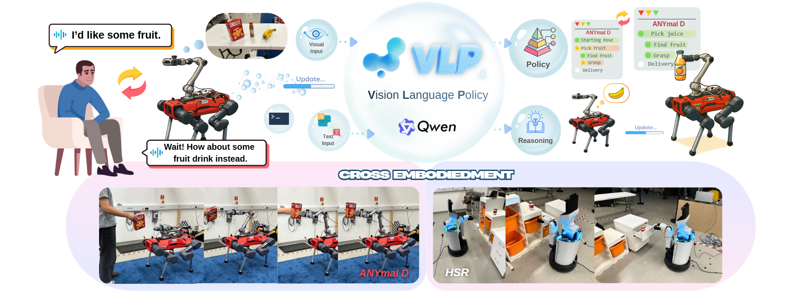
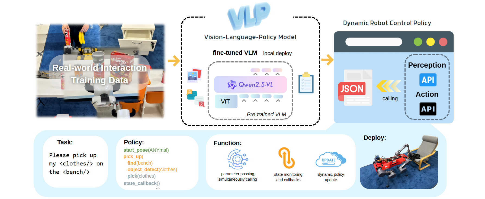

Enabling robots to autonomously generate task plans from human semantic instructions in unstructured environments is both crucial and highly challenging. This requires robots to perceive and reason over the current task scene through multiple modalities, and to plan their behaviors to achieve the intended goals. Traditional robotic task-planning approaches often struggle to bridge low-level execution with high-level task reasoning and cannot dynamically update task strategies when instructions change during execution, which ultimately limits their versatility and adaptability to new tasks. In this work, we propose a novel language model-based framework for dynamic robot task planning. Built upon a Visual-Language Policy model based on fine-tuned visual-language mode (VLM) trained by real-world data, this framework can interpret semantic instructions and integrate reasoning over the current task scene to generate behavior policies that control the robot to accomplish the task. Moreover, it can dynamically adjust the task strategy in response to changes in the command, enabling flexible adaptation to evolving task requirements. Experiments conducted with different robots and a variety tasks of real-world environment show that the trained model can efficiently adapt to novel scenarios and dynamically update its policy, demonstrating strong planning autonomy and impressive cross-embodiment generalization.

Overview of the Framework Stage 1 performs post-training of the VLM using real-world interaction data consisting of images, task instructions, and corresponding policies. Stage 2 deploys the VLP model locally and generates structure policies based on semantic input, which achieve real-time robot control and self-updating.
"Real-world experiments for different manipulation tasks."
"Real-world experiments for different manipulation tasks."